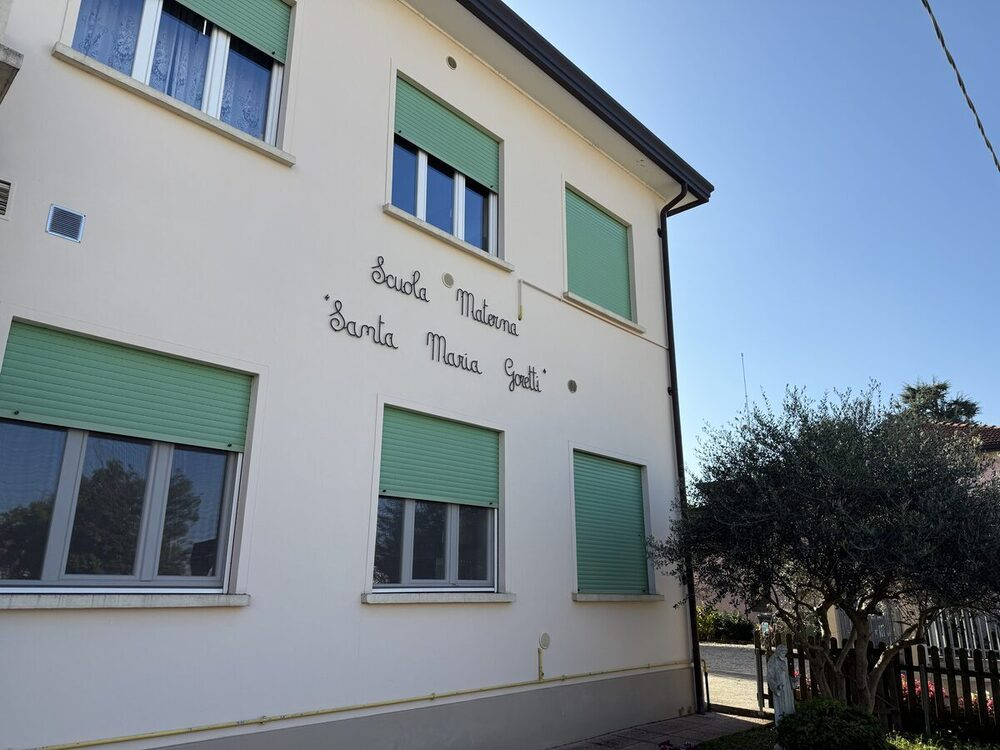
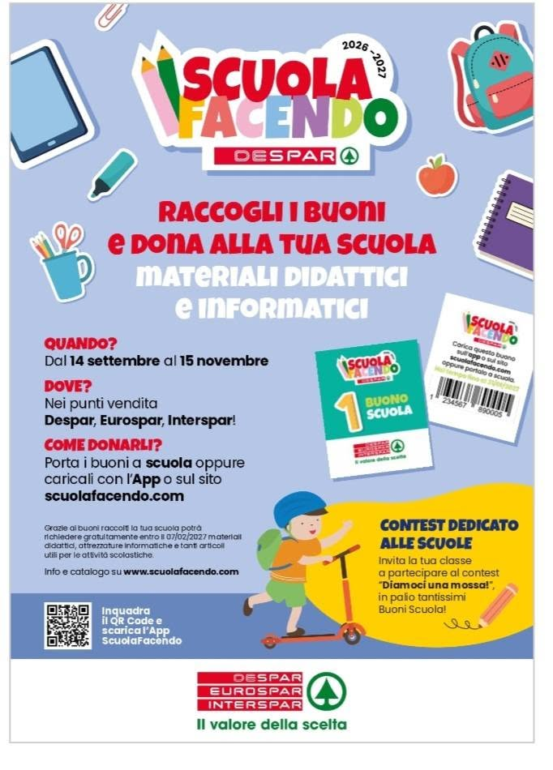

La nostra scuola
La storia, i valori e la mission della nostra scuola dell'infanzia, una realtà educativa di riferimento per il territorio e non solo.
Scopri di più →Un luogo dove ogni bambino e ogni bambina vengono accolti con amore e professionalità, crescono felici, imparano giocando e scoprono il mondo con gioia e meraviglia.
Scopri la nostra scuolaLa scuola cattolica cerca di promuovere quell’unità tra fede, cultura e vita che è obiettivo fondamentale dell’educazione cristiana
La scuola dell'infanzia Santa Maria Goretti è una scuola ad ispirazione cristiana, un luogo di accoglienza, crescita e relazione, nel quale ogni bambino viene accompagnato a sviluppare le proprie potenzialità, nel rispetto dei suoi tempi, della sua unicità e della sua storia.
La nostra scuola si impegna a costruire un ambiente sereno, inclusivo ed educativo, dove il bambino possa sentirsi accolto, ascoltato e valorizzato, imparando attraverso il gioco, l'esperienza, la scoperta, le relazioni con gli altri e l'amicizia con Gesù.

La storia, i valori e la mission della nostra scuola dell'infanzia, una realtà educativa di riferimento per il territorio e non solo.
Scopri di più →
Il nostro progetto pedagogico pone il bambino al centro, promuovendo lo sviluppo globale di tutte le sue potenzialità e accompagnandolo nella crescita cognitiva, emotiva, sociale e creativa in un ambiente sicuro, stimolante e accogliente.
Scopri di più →
Spazi colorati, sicuri e stimolanti, progettati per favorire il gioco, l'apprendimento e la socializzazione dei bambini, dove ogni esperienza diventa occasione di scoperta, creatività e crescita.
Scopri di più →
Un'alimentazione sana e bilanciata, con menù preparati con ingredienti freschi e di qualità pensati per i nostri piccoli.
Scopri di più →
Tutte le date importanti dell'anno scolastico: festività, eventi speciali, riunioni e attività con le famiglie.
Scopri di più →
Informazioni sugli orari di ingresso, uscita e sulle routine quotidiane, per offrire a genitori e bambini un'organizzazione chiara e serena.
Scopri di più →Vuoi far parte della nostra famiglia? Le iscrizioni per questo nuovo anno scolastico sono sempre aperte. Vieni a trovarci per conoscere la nostra realtà!
ContattaciResta aggiornato sulle ultime comunicazioni della scuola
Domenica 27 settembre, dalle 15.00 alle 17.00, la nostra scuola apre le porte alle famiglie di bambine e bambini dai 3 ai 6 anni.
Dove: Via Molini, 90 – Creola di Saccolongo (PD)
Telefono: 049 801 5128
Cellulare: 334 625 0626 (solo WhatsApp)
Email: smgoretti@alice.it
Sai che puoi supportare la nostra scuola con i tuoi ordini su Amazon.it?
Accedi gratuitamente con il tuo account Amazon, acquista su Amazon.it e Amazon e i partner di Un Click per la Scuola doneranno l'1% del valore dei tuoi acquisti idonei come credito virtuale alla scuola di tua scelta o a Save the Children a sostegno di progetti di contrasto alla povertà educativa.
Partecipare è facilissimo:
Un'iniziativa di Amazon in collaborazione con Save the Children, soggetta a Termini e Condizioni.
Raccogli i buoni e dona alla tua scuola materiali didattici e informatici.
Quando? Dal 14 settembre al 15 novembre.
Dove? Nei punti vendita Despar, Eurospar, Interspar!
Come donarli? Porta i buoni a scuola oppure caricali con l'App o sul sito scuolafacendo.com.
Grazie ai buoni raccolti la tua scuola potrà richiedere gratuitamente materiali didattici, attrezzature informatiche e tanti articoli utili per le attività scolastiche.
Info e catalogo su www.scuolafacendo.com

Si comunica che lunedì 14 settembre avrà inizio il tempo mattutino per i bambini piccoli e piccolissimi: nei giorni tra lunedì 14 e venerdì 25 i bambini piccoli e piccolissimi potranno usufruire del tempo scolastico mattutino con entrata a scuola alle ore 8.30 e uscita alle ore 12.40, pranzo compreso.
In accordo con l'insegnante la giornata piena con riposo pomeridiano verrà concordata per la prima settimana di ottobre.
Siamo sempre disponibili per informazioni e chiarimenti
Via Molini, 90
35030 Creola di Saccolongo (PD)
049 801 5128
334 625 0626 (solo WhatsApp)
Lun-Ven: 9.00 - 11.00
{kind=link}
{kind=link}
{kind=link}